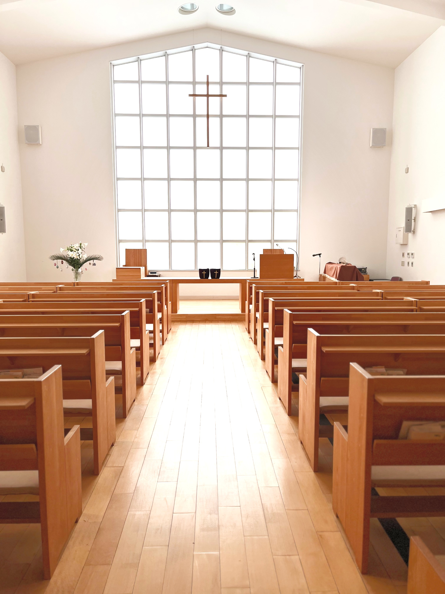

Welcome
ようこそ、中京教会へ
今週の御言葉 / Weekly Verse
シェア

あなたがたに平和があるように。 ヨハネによる福音書 20章21節
名古屋市東区白壁。1898年から祈りが受け継がれてきた場所で、あなたを待っています。
初めての礼拝は誰でも緊張するもの。当日の流れと、よくある質問にお答えします。
洗礼、献金、服装、お子様連れ ─ 気になることを気軽にどうぞ。
毎週日曜日の礼拝と、水曜日の祈祷会。どなたでも自由にご参加いただけます。
2010年に献堂された5代目会堂。2024年秋にはオランダ製のパイプオルガンが仲間入りしました。
教会学校は、幼児から高校生までが通っています。2024年度は主に新約聖書（マタイによる福音書）から学び、礼拝後にわかりやすく振り返る時間を持っています。
クリスマス・イースター・ペンテコステなどの礼拝に向けて、ミュージックベルの練習も。保護者の方も一緒にご参加いただけます。
1898年、名古屋英和学校の宣教師と生徒たちの祈祷会から、中京教会の歩みは始まりました。
読み込み中…
ご質問、牧師への匿名質問、祈りのリクエストなど、ご自由にどうぞ。
※献金は自由意志によるものです。教会にお越しの際に直接お渡しいただくこともできます。